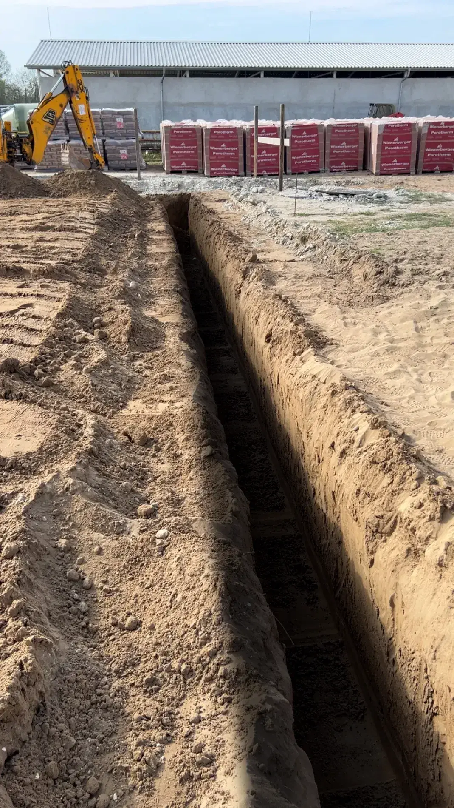

Szerkesztett fénykép – mélyebb hatásKiemelt munka · 01
Közműárok-ásás
Egyenes falú árok homokos talajban, a kitermelt föld az árok mellett. A „Mélyebb hatás” nézet ugyanaz a fénykép árnyékolással kiemelve; az eredeti és egy szemléltető metszet is megnézhető.